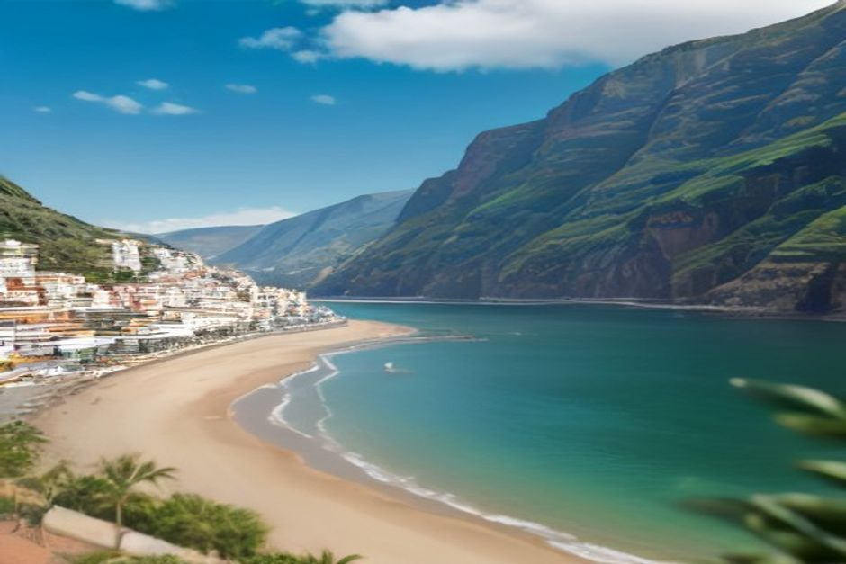
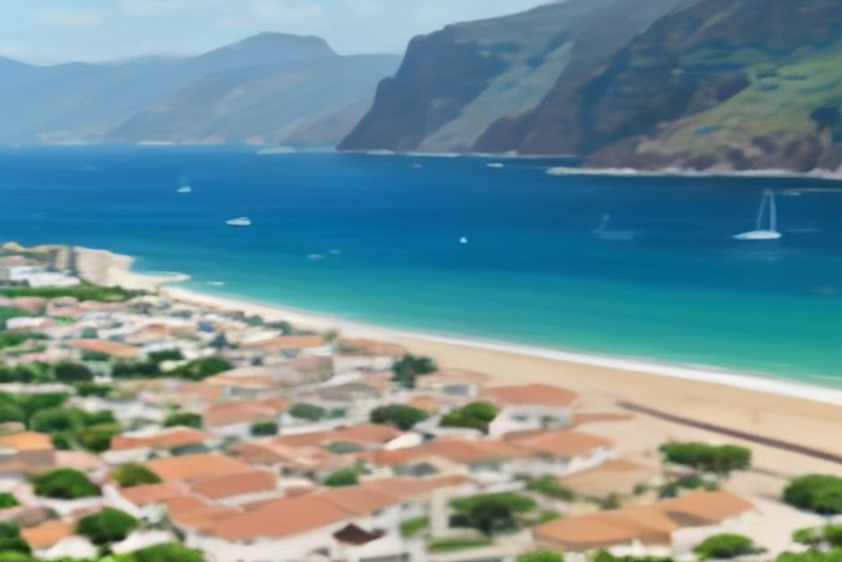

Ribeira Brava sits where a river most Madeirans have never seen run dry meets the Atlantic, halfway between Câmara de Lobos and Ponta do Sol on the island's south coast. It's easy to drive straight through on the way to somewhere bigger — but the pebble beach, a 500-year-old church with one of the most photographed rooflines on the island, and a small 18th-century fort make it worth the ten minutes it actually takes to stop.
Where is Ribeira Brava, and how do you get there?
Ribeira Brava is on Madeira's south coast, about 25 minutes west of Funchal by the VE4 expressway, at the mouth of the river that gives the town its name — ribeira brava means "wild river." By road it's the natural halfway point between Câmara de Lobos and Ponta do Sol, and the ER101 tunnel just west of the village marks the start of the more dramatic, cliff-hugging stretch of coast toward Calheta. By sea, it sits directly on the route any boat takes heading west out of Marina do Funchal, which is why it shows up on private charters as a stop rather than a special trip of its own.

What is Ribeira Brava known for?
Ribeira Brava is one of the oldest settled parishes on Madeira, and its centre still reads as a working village rather than a resort — a seafront promenade paved in traditional black-and-white calçada, a Saturday market, and a skyline dominated by one unmistakable church tower. It's also a transport hub: roads north over the mountains to Serra de Água and Encumeada start here, which historically made it a crossing point between Madeira's south and north coasts long before the tunnels existed.
Can you swim at Ribeira Brava?
Yes. The village has a pebble beach in a bay sheltered by a breakwater, which keeps the water calmer here than on more exposed stretches of the south coast. As with almost everywhere on Madeira, there's no sand — the beach is dark volcanic pebble and rock, comfortable enough barefoot but easier with water shoes. It's a reliable swim stop precisely because the shelter that makes the bay work as a small harbour also takes the edge off the swell.
What is the São Bento Church, and is it worth visiting?
The Igreja de São Bento is one of the oldest churches on Madeira, grown from a small 15th-century chapel into the 16th-century building standing today, with Manueline and Baroque details inside and a three-nave interior hung with crystal chandeliers. From outside, the detail everyone actually photographs is the bell tower: its roof is covered in blue-and-white glazed tiles and topped with a planisphere, a design unlike any other church roofline on the island. It sits a short walk from the beach, right in the village centre, and takes about fifteen minutes to see properly.
Is there anything else to see in the village?
The Forte de São Bento, a compact fort built in 1708 as part of Madeira's coastal defences, stands on the seafront and now works as an information point rather than a fortress — worth a five-minute look on the way to or from the beach. The Museu Etnográfico da Madeira, a short walk inland in an old sugar-cane spirit distillery, covers the island's rural life, wine-making and traditional crafts for anyone with an extra half hour. Beyond that, the village itself — the promenade, the market, the small cafés along the seafront — is the point, not any single sight.

Is Ribeira Brava included on a boat trip from Funchal?
Yes — it's the second swim stop on Chifbay's private Day Trip from Marina do Funchal, after Câmara de Lobos, the drone shot at Cabo Girão and a first swim at Fajã dos Padres. On the 2h30 option the boat turns back to Funchal from here; on the 3-hour route it continues on to Ponta do Sol with a filmed video of the trip. Seeing the church tower and the fort from the water, with the same bay you might have just swum in, gives a different read on the village than arriving by road ever does.
When is the best time to visit Ribeira Brava?
Late spring through early autumn if swimming is part of the plan — the water is at its warmest and the bay is calmest through summer. The village itself is worth a stop year-round, since the church, the fort and the promenade don't depend on the weather the way the beach does. Mornings tend to be quieter than the afternoon, before the day's traffic on the VE4 picks up.
Most visitors drive past Ribeira Brava twice — on the way to Cabo Girão and on the way back — without ever stopping. Ten minutes by the water is enough to see why that's a mistake.
Whether you reach it by road or by sea, Ribeira Brava rewards a short stop more than most places on this coast — a working village, a genuinely old church, and a swim that doesn't require a special trip to justify it.